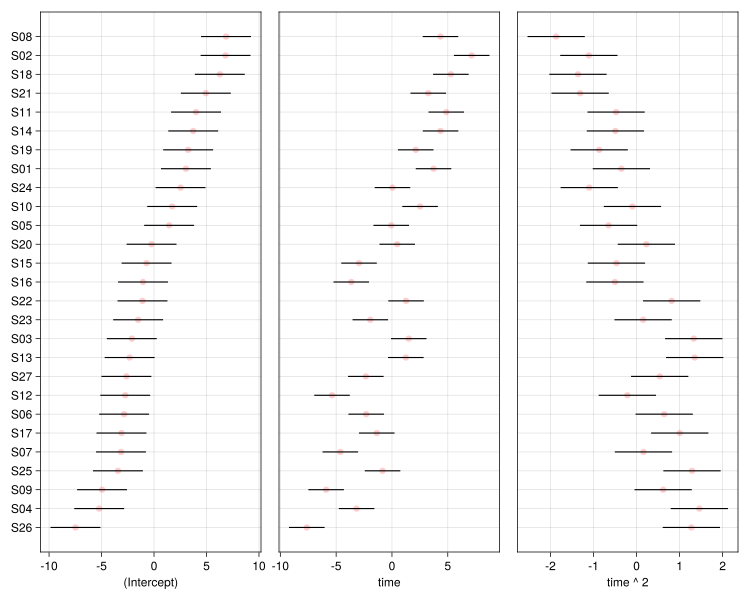
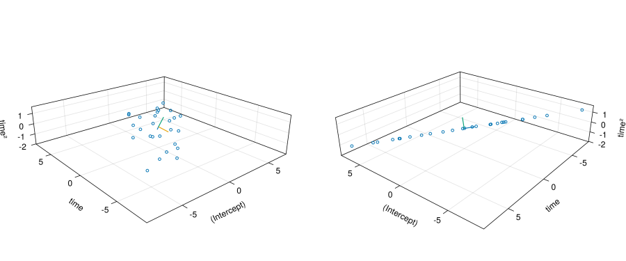
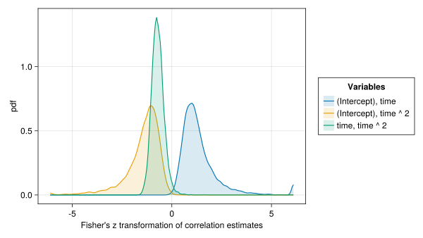

usingAlgebraOfGraphicsusingCairoMakieusingDataFrameMacrosusingDataFramesusingEmbraceUncertainty: datasetusingLinearAlgebrausingMixedModelsusingMixedModelsMakieusingProgressMeterusingRandomusingRCallusingStandardizedPredictors#using CairoMakie: scatter! # PA I have no idea why this is failing to resolve later since this exportedif !isdefined(Main, :contrasts)const contrasts =Dict{Symbol,Any}()endCairoMakie.activate!(; type="svg")ProgressMeter.ijulia_behavior(:clear)
Longitudinal data consist of repeated measurements on the same subject, or some other observational unit, taken over time. Generally we wish to characterize the time trends within subjects and between subjects. The data will always include the response, the time covariate and the indicator of the subject on which the measurement has been made. If other covariates are recorded, say whether the subject is in the treatment group or the control group, we may wish to relate the within- and between-subject trends to such covariates.
In this chapter we introduce graphical and statistical techniques for the analysis of longitudinal data by applying them to a simple example.
3.1 The elstongrizzle data
Data from a dental study measuring the lengths of the ramus bone (mm) in 20 boys at 8, 8.5, 9, and 9.5 years of age were reported in Elston & Grizzle (1962) and in Davis (2002).
elstongrizzle =dataset(:elstongrizzle)
Arrow.Table with 80 rows, 3 columns, and schema:
:Subj String
:time Float64
:resp Float64
with metadata given by a Base.ImmutableDict{String, String} with 3 entries:
"title" => "Ramus bone lengths of boys from 8 to 9.5 years of age"
"references" => "@davis2002, Table 3.1, p. 52 and @elstongrizzle1962"
"sourcefile" => "EG.DAT"
Converting the table to a data frame provides the description
3×7 DataFrame
Row
variable
mean
min
median
max
nmissing
eltype
Symbol
Union…
Any
Union…
Any
Int64
DataType
1
Subj
S01
S20
0
String
2
time
8.75
8.0
8.75
9.5
0
Float64
3
resp
50.0875
45.0
49.65
55.5
0
Float64
A common way of plotting such longitudinal data is response versus time on a single axis with the observations for each individual joined by a line, Figure 3.1 (see also Figure 3.2, p. 52 of Davis (2002)).
Figure 3.2: Length of ramus bone versus age for a sample of 20 boys. The panels are ordered rowwise, starting at the bottom left, by increasing bone length at age 8.
To aid comparisons between subjects the axes are the same in every panel and the order of the panels is chosen systematically - in Figure 3.2 the order is by increasing bone length at 8 years of age. This ordering makes it easier to examine the patterns in the rate of increase versus the initial bone length.
And there doesn’t seem to be a strong relationship. Some subjects, e.g. S03 and S04, with shorter initial bone lengths have low growth rates. Others, e.g. S10 and S20, have low initial bone lengths and a high growth rate. Similarly, S06 and S11 have longer initial bone lengths and a low growth rate while S07 and S11 have longer initial bone lengths and a high growth rate.
3.2 Random effects for slope and intercept
Although it seems that there isn’t a strong correlation between initial bone length and growth rate in these data, a model with an overall linear trend and possibly correlated random effects for intercept and slope by subject estimates a strong negative correlation (-0.97) between these random effects.
contrasts[:Subj] =Grouping()egm01 =let f =@formula resp ~1+ time + (1+ time | Subj)fit(MixedModel, f, egdf; contrasts)endprintln(egm01)
Minimizing 319 Time: 0:00:00 ( 0.79 ms/it)
Linear mixed model fit by maximum likelihood
resp ~ 1 + time + (1 + time | Subj)
logLik -2 logLik AIC AICc BIC
The reason for this seemingly unlikely result is that the (Intercept) term in the fixed effects and the random effects represents the bone length at age 0, which is not of interest here. Notice that the fixed-effects (Intercept) estimate is about 33.5 mm, which is far below the observed range of the data (45.0 to 55.5 mm.)
Extrapolation from the observed range of ages, 8 years to 9.5 years, back to 0 years, will almost inevitably result is a negative correlation between slope and intercept.
A caterpillar plot of the random effects for intercept and slope, Figure 3.3, shows both the negative correlation between intercept and slope conditional means and wide prediction intervals on the random effects for the intercept.
Figure 3.3: Conditional modes and 95% prediction intervals on the random effects for slope and intercept in model egm01
3.2.1 Centering the time values
The problem of estimates of intercepts representing extrapolation beyond the observed range of the data is a common one for longitudinal data. If the time covariate represents an age, as it does here, or, say, a year in the range 2000 to 2020, the intercept, which corresponds to an age or year of zero, is rarely of interest.
The way to avoid extrapolation beyond the range of the data is to center the time covariate at an age or date that is of interest. For example, we may wish to consider “time in study” instead of age as the time covariate.
In discussing Figure 3.2 we referred to the bone length at 8 years of age, which was the time of first measurement for each of the subjects, as the “initial” bone length. If the purpose of the experiment is to create a predictive model for the growth rate that can be applied to boys who enter this age range then we could center the time at 8 years.
Alternatively, we could center at the average observed time, 8.75 years, or at some other value of interest.
The important thing is to make clear what the (Itercept) parameter estimates represent. The StandardizedPredictors.jl package allows for convenient representations of several standardizing transformations in a contrasts specification for the model. An advantage of this method of coding a transformation is that the coefficient names include a concise description of the transformation.
(In model specifications in R and later in Julia the name contrasts has been come to be applied to ways of specifying the association between covariates in the data and parameters in a model. This is an extension of the original mathematical definition of contrasts amongst the levels of a categorical covariate.)
A model with time centered at 8 years of age can be fit as
contrasts[:time] =Center(8)egm02 =let f =@formula resp ~1+ time + (1+ time | Subj)fit(MixedModel, f, egdf; contrasts)endprintln(egm02)
Linear mixed model fit by maximum likelihood
resp ~ 1 + time(centered: 8) + (1 + time(centered: 8) | Subj)
logLik -2 logLik AIC AICc BIC
-117.2404 234.4809 246.4809 247.6316 260.7730
Variance components:
Comparing the parameter estimates from models egm01 and egm02, we find that the only differences are in the estimates for the (Intercept) terms in the fixed-effects parameters and the variance component parameters and in the correlation of the random effects. In terms of the predictions from the model and the likelihood at the parameter estimates, egm01 and egm02 are the same model.
A caterpillar plot, Figure 3.4, for egm02 shows much smaller spread and more precision in the distribution of the random effects for (Intercept) but the same spread and precision for the time random effects, although these random effects are displayed in a different order.
Because the default for the Center contrast is to center about the mean, this contrasts argument can be written
Notice that in this model the estimated correlation of the random effects for Subj is positive.
3.3 Shrinkage plots
One way of assessing a random-effects term in a linear mixed model is with a caterpillar plot, which shows two important characteristics, location and spread, of the conditional distribution \(({\mathcal{B}}|{\mathcal{Y}}={\mathbf{y}})\).
Another plot of interest is to show the extent to which the conditional means have been “shrunk” towards the origin by the mixed-model, which represents a compromise between fidelity to the data, measured by the sum of squared residuals, and simplicity of the model.
The model with the highest fidelity to the data corresponds to a fixed-effects model with the random effects model matrix, \({\mathbf{Z}}\), incorporated into the fixed-effects model matrix, \({\mathbf{X}}\). There are technical problems (rank deficiency) with trying to estimate parameters in this model but such “unconstrained” random effects can be approximated as the conditional means for a very large \({\boldsymbol{\Sigma}}\) matrix. (In practice we use a large multiple, say 1000, of the identity matrix as the value of \({\boldsymbol{\Sigma}}\).)
At the other end of the spectrum is the limit as \({\boldsymbol{\Sigma}}\rightarrow\mathbf{0}\), which is the simplest model, involving only the fixed-effects parameters, but usually with a comparatively poor fit.
A shrinkage plot shows the conditional means of the random effects from the model that was fit and those for a “large” \({\boldsymbol{\Sigma}}\).
Figure 3.5: Shrinkage plot of the random effects for model egm02. Blue dots are the conditional means of the random effects at the parameter estimates. Red dots are the corresponding unconstrained estimates.
Figure 3.5 reinforces some of the conclusions from Figure 3.4. In particular, the random effects for the (Intercept) are reasonably precisely determined. We see this in Figure 3.4 because the intervals in the left panel are narrow. In Figure 3.5 there is little movement in the horizontal direction between the “unconstrained” within-subject estimates and the final random-effect locations.
3.4 Nonlinear growth curves
As seen in Figure 3.2 some of the growth curves are reasonably straight (e.g. S03, S11, and S15) whereas others are concave-up (e.g. S04, S13, and S17) or concave-down (e.g. S05, S07, and S19). One way of allowing for curvature in individual growth curves is to include a quadratic term for time in both the fixed and random effects.
The usual cautions about polynomial terms in regression models apply even more emphatically to linear mixed models.
Interpretation of polynomial coefficients depends strongly upon the location of the zero point in the time axis.
Extrapolation of polynomial models beyond the observed range of the time values is very risky.
For balanced data like egdf we usually center the time axis about the mean, producing
We see that the estimate for the population quadratic coefficient, -0.04, is small, relative to its standard error, 0.20, indicating that it is not significantly different from zero. This is not unexpected because some of the growth curves in Figure 3.2 are concave-up, while others are concave-down, and others don’t show a noticeable curvature.
A shrinkage plot, Figure 3.6, shows that the random effects for the quadratic term (vertical axis in the bottom row of panels) are highly attenuated relative to the unconstrained, “per-subject”, values.
Figure 3.6: Shrinkage plot of the random effects for model egm04. Blue dots are the conditional means of the random effects at the parameter estimates. Red dots are the corresponding unconstrained estimates.
Both of these results lead to the conclusion that linear growth, over the observed range of ages, should be adequate - a conclusion reinforced by a likelihood ratio test.
Often the “subjects” on which longitudinal measurements are made are divided into different treatment groups. Many of the examples cited in Davis (2002) are of this type, including one from Box (1950)
box1950 =dataset(:box)
Arrow.Table with 135 rows, 4 columns, and schema:
:Group String
:Subj String
:time Int8
:resp Int16
with metadata given by a Base.ImmutableDict{String, String} with 3 entries:
"title" => "Body weight by week of rats in three treatment groups"
"references" => "@davis2002, Table 2.12, p. 32 and Problem 2.4, p. 32, and @b…
"sourcefile" => "BOX.DAT"
bxdf =DataFrame(box1950)describe(bxdf)
4×7 DataFrame
Row
variable
mean
min
median
max
nmissing
eltype
Symbol
Union…
Any
Union…
Any
Int64
DataType
1
Group
Control
Thyroxin
0
String
2
Subj
S01
S27
0
String
3
time
2.0
0
2.0
4
0
Int8
4
resp
100.807
46
100.0
189
0
Int16
There are three treatment groups
show(levels(bxdf.Group))
["Control", "Thioracil", "Thyroxin"]
and each “subject” (rat, in this case) is in only one of the treatment groups. This can be checked by comparing the number of unique Subj levels to the number of unique combinations of Subj and Group.
Because the number of combinations of Subj and Group is equal to the number of subjects, each subject occurs in only one group.
These data are balanced with respect to time (i.e. each rat is weighed at the same set of times) but not with respect to treatment, as can be seen by checking the number of rats in each treatment group.
Figure 3.10: Weight (g) of rats in the Thyroxin group versus time in trial (wk). Panels are ordered by increasing initial weight.
if there is any suggestion of curvature it would be concave-up.
3.5.2 Models with interaction terms
Longitudinal data in which the observational units, each rat in this case, are in different treatment groups, require careful consideration of the origin on the time axis. If, as here, the origin on the time axis is when the treatments of the different groups began and the subjects have been randomly assigned to the treatment groups, we do not expect differences between groups at time zero.
Usually, when a model incorporates an effect for time and a time & Group interaction - checking for different underlying slopes of the response with respect to time for each level of Group, we will also include a “main effect” for Group. This is sometimes called the hierarchical principle regarding interactions - a significant higher-order interaction usually forces inclusion of any lower-order interactions or main effects contained in it.
One occasion where the hierarchical principle does not apply is when the main effect for Group would represent systematic differences in the response before the treatments began. Similarly in dose-response data; when a zero dose is included we could have a main effect for dose and a dose & Group interaction without a main effect for Group, because zero dose of a treatment is the same as zero dose of a placebo.
We can begin with a main effect for Group, as in
delete!(contrasts, :time)bxm01 =let f =@formula resp ~ (1+ time + time^2) * Group + (1+ time + time^2| Subj)fit(MixedModel, f, bxdf; contrasts)end
Est.
SE
z
p
σ_Subj
(Intercept)
54.1086
1.5367
35.21
<1e-99
4.0283
time
24.0229
1.5639
15.36
<1e-52
3.7540
time ^ 2
0.6143
0.3988
1.54
0.1235
0.9973
Group: Thioracil
0.9086
2.1732
0.42
0.6759
Group: Thyroxin
0.6302
2.3948
0.26
0.7924
time & Group: Thioracil
-1.6271
2.2117
-0.74
0.4619
time & Group: Thyroxin
-2.1861
2.4372
-0.90
0.3697
time ^ 2 & Group: Thioracil
-1.9357
0.5640
-3.43
0.0006
time ^ 2 & Group: Thyroxin
0.7122
0.6215
1.15
0.2518
Residual
2.8879
but we expect that a model without the main effect for Group,
bxm02 =let f =@formula resp ~1+ (time + time^2) & Group + (1+ time + time^2| Subj)fit(MixedModel, f, bxdf; contrasts)end
Est.
SE
z
p
σ_Subj
(Intercept)
54.6085
0.9382
58.21
<1e-99
4.0466
time & Group: Control
24.1725
1.5206
15.90
<1e-56
time & Group: Thioracil
22.2734
1.5206
14.65
<1e-47
time & Group: Thyroxin
21.7977
1.8081
12.06
<1e-32
time ^ 2 & Group: Control
0.5655
0.3806
1.49
0.1374
time ^ 2 & Group: Thioracil
-1.2815
0.3806
-3.37
0.0008
time ^ 2 & Group: Thyroxin
1.3393
0.4510
2.97
0.0030
time
3.7539
time ^ 2
0.9977
Residual
2.8887
will be adequate, as confirmed by
MixedModels.likelihoodratiotest(bxm02, bxm01)
model-dof
deviance
χ²
χ²-dof
P(>χ²)
resp ~ 1 + time & Group + :(time ^ 2) & Group + (1 + time + :(time ^ 2) | Subj)
14
836
resp ~ 1 + time + :(time ^ 2) + Group + time & Group + :(time ^ 2) & Group + (1 + time + :(time ^ 2) | Subj)
16
835
0
2
0.9135
Warning
Unfortunately, the interpretations of some of the fixed-effects coefficients change between models bxm01 and bxm02. In model bxm01 the coefficient labelled time is the estimated slope at time zero for the Control group. In model bxm02 this coefficient is labelled time & Group: Control.
In model bxm01 the coefficient labelled time & Group: Thioracil is the change in the estimated slope at time zero between the Thioracil group and the Control group. In model bxm02 the coefficient with this label is the estimated slope at time zero in the Thioracil group.
Note
Is there a way to write the formula for bxm02 to avoid this?
We see the effect of this changing interpretation in the p-values associated with these coefficients. In model bxm01 the only coefficients with low p-values are the (Intercept), the time, representing a typical rate of weight gain in the control group at time zero, and the change in the quadratic term from the Control group to the Thioracil group.
A model without systematic differences between groups in the initial weight and the initial slope but with differences between groups in the quadratic coefficient is sensible. It would indicate that the groups are initially homogeneous both in weight and growth rate but, as the trial proceeds, the different treatments change the rate of growth.
bxm03 =let f =@formula resp ~1+ time + time^2& Group + (1+ time + time^2| Subj)fit(MixedModel, f, bxdf; contrasts)end
Est.
SE
z
p
σ_Subj
(Intercept)
54.6085
0.9350
58.41
<1e-99
4.0131
time
22.8534
0.9627
23.74
<1e-99
3.8081
time ^ 2 & Group: Control
0.7854
0.3240
2.42
0.0154
time ^ 2 & Group: Thioracil
-1.3781
0.3240
-4.25
<1e-04
time ^ 2 & Group: Thyroxin
1.1630
0.3691
3.15
0.0016
time ^ 2
0.9954
Residual
2.9094
MixedModels.likelihoodratiotest(bxm03, bxm02)
model-dof
deviance
χ²
χ²-dof
P(>χ²)
resp ~ 1 + time + :(time ^ 2) & Group + (1 + time + :(time ^ 2) | Subj)
12
837
resp ~ 1 + time & Group + :(time ^ 2) & Group + (1 + time + :(time ^ 2) | Subj)
14
836
1
2
0.5328
3.5.3 Possible simplification of random effects
A caterpillar plot created from the conditional means and standard deviations of the random effects by Subj for model bxm03, Figure 3.11, indicates that all of the random-effects terms generate some prediction intervals that do not contain zero.
Code
caterpillar(bxm03)

Figure 3.11: Conditional modes and 95% prediction intervals on the random effects for slope and intercept in model bxm03
Figure 3.12: Shrinkage plot of the random effects for model bxm03. Blue dots are the conditional means of the random effects at the parameter estimates. Red dots are the corresponding unconstrained estimates.
shows that the random effects are considerably shrunk towards the origin, relative to the “unconstrained” values from within-subject fits, but none of the panels shows them collapsing to a line.
Nevertheless, the estimated unconditional distribution of the random effects in model bxm03 is a degenerate distribution.
That is, the estimated within-subject covariance of the random effects is singular.
issingular(bxm03)
true
One way to see this is because the relative covariance factor, \(\boldsymbol{\lambda}\), of the within-subject random effects is
Thus, in a three-dimensional space the conditional means of the random effects for each rat, lie on a plane, even though each of the two-dimensional projections in Figure 3.12 show a scatter.
Three-dimensional plots of the conditional means of the random effects, Figure 3.13, can help to see that these points lie on a plane.
Code
let bpts =Point3f.(eachcol(only(bxm03.b))) Upts =Point3f.(eachcol(svd(only(bxm03.λ)).U)) origin =Point3(zeros(Float32, 3)) xlabel, ylabel, zlabel =only(bxm03.reterms).cnames zlabel ="time²" perspectiveness =0.5 aspect =:data f =Figure(; resolution=(1200, 500)) u, v, w =-Upts[2] # second principle direction flipped to get positive w elevation =asin(w) azimuth =atan(v, u) ax1 =Axis3(f[1, 1]; aspect, xlabel, ylabel, zlabel, perspectiveness) ax2 =Axis3( f[1, 2]; aspect, xlabel, ylabel, zlabel, perspectiveness, elevation, azimuth, )scatter!(ax1, bpts; marker='∘', markersize=20)scatter!(ax2, bpts; marker='∘', markersize=20)for p in Upts seg = [origin, p]lines!(ax1, seg)lines!(ax2, seg)end fend

Figure 3.13: Two views of the conditional means of the random effects from model bxm03. The lines from the origin are the principal axes of the unconditional distribution of the random effects. The panel on the right is looking in along the negative of the second principle axis (red line in left panel).
In each of the panels the three orthogonal lines from the origin are the three principle axes of the unconditional distribution of the random effects, corresponding to the columns of
The panel on the right is oriented so the viewpoint is along the negative of the second principle axis, showing that there is considerable variation in the first principle direction and zero variation in the third principle direction.
We see that the distribution of the random effects in model bxm03 is degenerate but it is not clear how to simplify the model.
Coverage intervals from a parametric bootstrap sample for this model
┌ Warning: `hide_progress` is deprecated, please use `progress` instead.NB: `progress` is a positive action, i.e. `progress=true` means show the progress bar.
│ caller = kwcall(::NamedTuple{(:hide_progress,), Tuple{Bool}}, ::typeof(parametricbootstrap), rng::Xoshiro, n::Int64, morig::LinearMixedModel{Float64}) at bootstrap.jl:204
└ @ MixedModels ~/.julia/packages/MixedModels/LJXGY/src/bootstrap.jl:204
12×5 DataFrame
Row
type
group
names
lower
upper
String
String?
String?
Float64
Float64
1
β
missing
(Intercept)
52.7309
56.421
2
β
missing
time
20.9169
24.7163
3
β
missing
time ^ 2 & Group: Control
0.152853
1.43639
4
β
missing
time ^ 2 & Group: Thioracil
-2.02238
-0.724441
5
β
missing
time ^ 2 & Group: Thyroxin
0.423834
1.90147
6
σ
Subj
(Intercept)
2.47279
5.4804
7
σ
Subj
time
2.25493
5.43417
8
ρ
Subj
(Intercept), time
0.381014
1.0
9
σ
Subj
time ^ 2
0.546997
1.3949
10
ρ
Subj
(Intercept), time ^ 2
-1.0
-0.445055
11
ρ
Subj
time, time ^ 2
-0.898086
-0.185011
12
σ
residual
missing
2.31842
3.26427
shows that the coverage intervals for both of the correlation parameters involving the (Intercept) extend out to one of the limits of the allowable range [-1, 1] of correlations.
A kernel density plot, Figure 3.14, of the parametric bootstrap estimates of the correlation coefficients reinforces this conclusion.
let dat =@transform(@subset(bxm03pars, :type=="ρ"),:z =atanh(clamp(:value, -0.99999, 0.99999)) ) mp =mapping(:z =>"Fisher's z transformation of correlation estimates"; color=(:names =>"Variables"), )draw(data(dat) * mp * AlgebraOfGraphics.density(); figure=(; resolution=(800, 450)), )end

Figure 3.15: Kernel density plots of Fisher’s z transformation of parametric bootstrap estimates of correlation estimates from model bxm03
Because of these high correlations, trying to deal with the degenerate random effects distribution by simply removing the random effects for time ^ 2 reduces the model too much.
bxm04 =let f =@formula resp ~1+ time + time^2& Group + (1+ time | Subj)fit(MixedModel, f, bxdf; contrasts)end
Est.
SE
z
p
σ_Subj
(Intercept)
54.6085
1.2587
43.38
<1e-99
5.5780
time
22.8534
1.0454
21.86
<1e-99
3.6245
time ^ 2 & Group: Control
0.7633
0.2526
3.02
0.0025
time ^ 2 & Group: Thioracil
-1.3807
0.2526
-5.47
<1e-07
time ^ 2 & Group: Thyroxin
1.1984
0.2890
4.15
<1e-04
Residual
3.6290
MixedModels.likelihoodratiotest(bxm04, bxm03)
model-dof
deviance
χ²
χ²-dof
P(>χ²)
resp ~ 1 + time + :(time ^ 2) & Group + (1 + time | Subj)
9
867
resp ~ 1 + time + :(time ^ 2) & Group + (1 + time + :(time ^ 2) | Subj)
12
837
30
3
<1e-05
as does eliminating within-subject correlations between the random-effects for the time^2 random effect and the other random effects.
bxm05 =let f =@formula resp ~1+ time + time^2& Group + (1+ time | Subj) + (0+ time^2| Subj)fit(MixedModel, f, bxdf; contrasts)end
Est.
SE
z
p
σ_Subj
(Intercept)
54.6085
1.0433
52.34
<1e-99
4.6060
time
22.8534
0.8167
27.98
<1e-99
2.5576
time ^ 2 & Group: Control
0.8262
0.3471
2.38
0.0173
time ^ 2 & Group: Thioracil
-1.4171
0.3471
-4.08
<1e-04
time ^ 2 & Group: Thyroxin
1.1605
0.4054
2.86
0.0042
time ^ 2
0.9240
Residual
3.0374
MixedModels.likelihoodratiotest(bxm05, bxm03)
model-dof
deviance
χ²
χ²-dof
P(>χ²)
resp ~ 1 + time + :(time ^ 2) & Group + (1 + time | Subj) + (0 + :(time ^ 2) | Subj)
10
850
resp ~ 1 + time + :(time ^ 2) & Group + (1 + time + :(time ^ 2) | Subj)
12
837
13
2
0.0017
3.5.4 Some consequences of changing the random-effects structure
The three models bxm03, bxm04, and bxm05 have the same fixed-effects structure. The random effects specification varies from the most complicated (bxm03), which produces a singular estimate of the covariance, to the simplest (bxm04) structure to an intermediate structure (bxm05).
The likelihood ratio tests give evidence for preferring bxm03, the most complex of these models, but also one with a degenerate distribution of the random effects.
If we assume that the purpose of the experiment is to compare the effects of the two treatments versus the Control group on the weight gain of the rats, then interest would focus on the fixed-effects parameters and, in particular, on those associated with the groups. The models give essentially the same predictions of weight versus time for a “typical” animal in each group, Figure 3.16.
Figure 3.16: Typical weight curves from models bxm03, bxm04, and bxm05 for each of the three treatment groups.
Note
Other points to make:
1. Standard errors are different, largest for `bxm05`, smallest for `bxm04`
2. Real interest should center on the differences in the quadratic coef - trt vs control
3. Not sure how to code that up
4. More complex models require more iterations and more work per iteration
5. Probably go with `bxm03` in this case, even though it gives a degenerate dist'n of random effects. The idea is that the random effects are absorbing a form of rat-to-rat variability. The residual standard deviation does reflect this.
This page was rendered from git revision 573bdf6
.
Box, G. E. P. (1950). Problems in the analysis of growth and wear curves. Biometrics, 6(4), 362. https://doi.org/10.2307/3001781
Davis, C. S. (2002). Statistical methods for the analysis of repeated measurements. In Springer Texts in Statistics (pp. xxiv + 415). New York, NY: Springer. https://doi.org/10.1007/b97287
Elston, R. C., & Grizzle, J. E. (1962). Estimation of time-response curves and their confidence bands. Biometrics, 18, 148–159. https://doi.org/10.2307/2527453